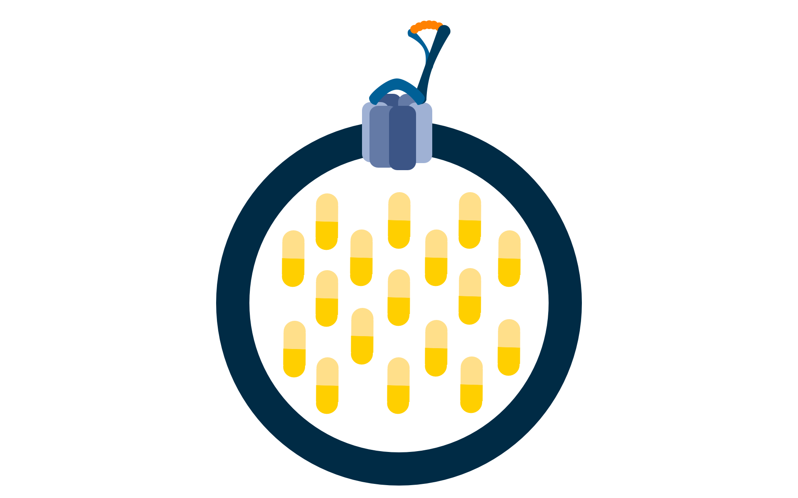
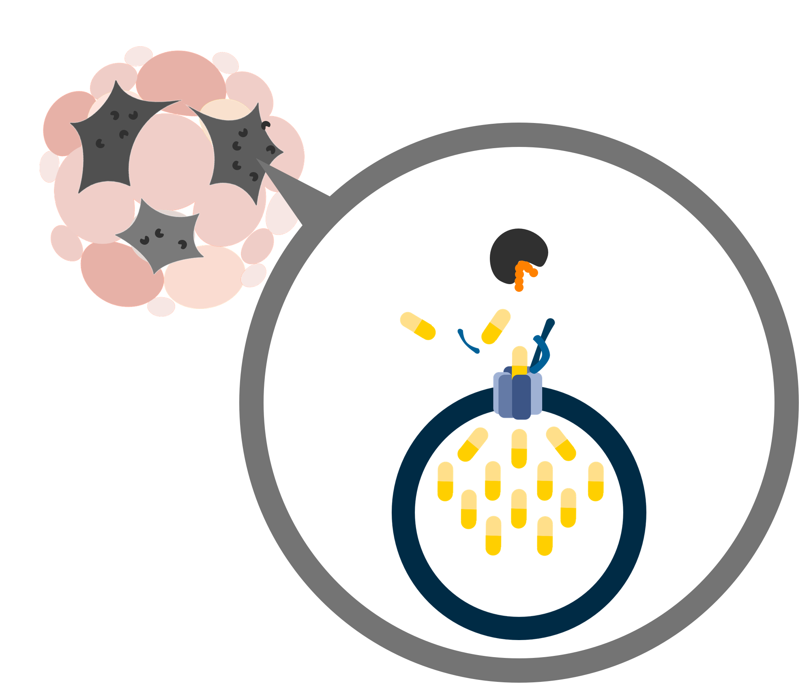
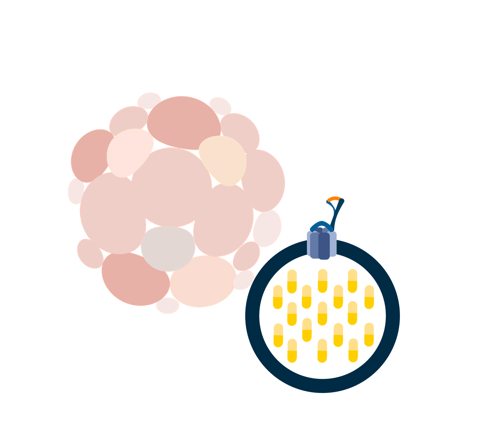
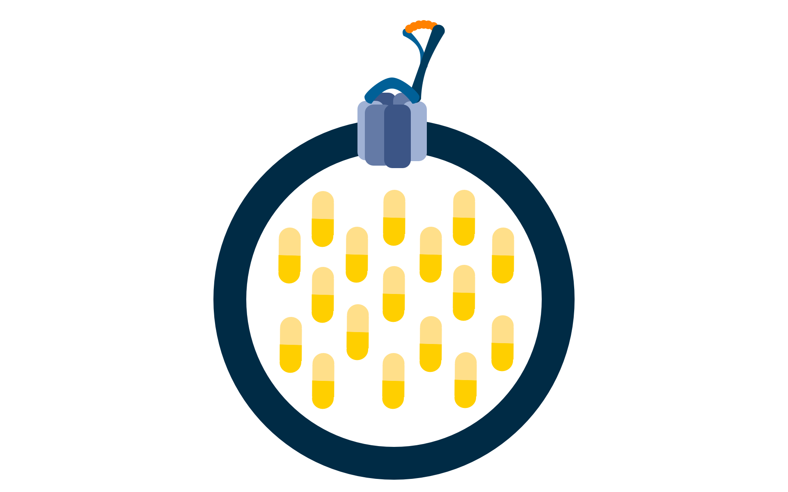
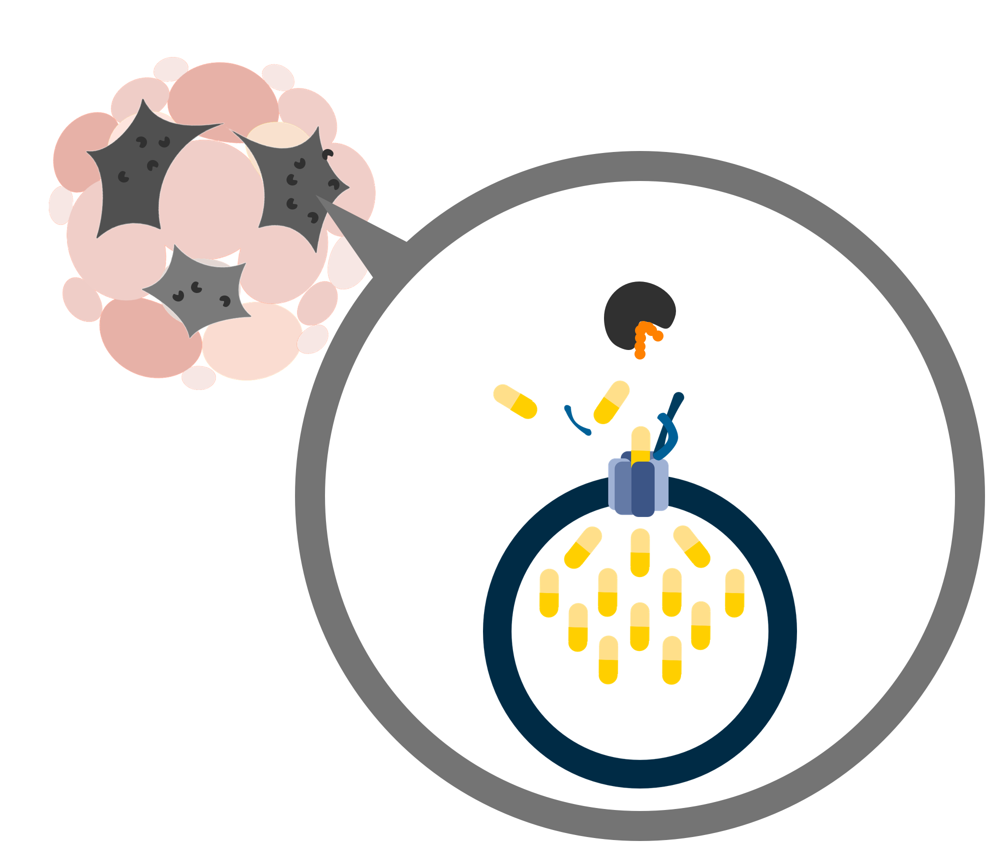
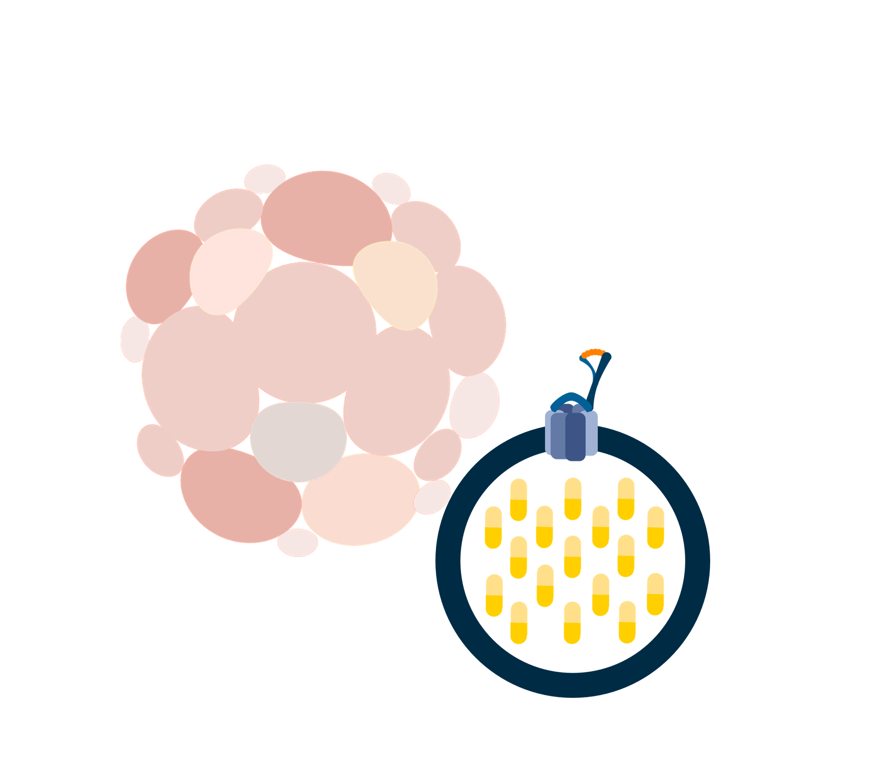

42
In order to tackle the side effects and drug resistance from traditional chemotherapy, the latest cancer treatments encapsulate the drugs inside synthetic cells called liposomes. Liposomes are biocompatible, non-toxic, non-immunogenic and biodegradable, and can be engineered to deliver the drugs to specific tissues.

 




